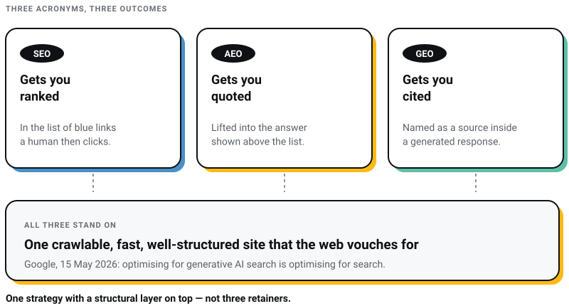

Digital Marketing
Digital Marketing
Why ChatGPT Recommends Your Competitor and Not You (The 5-Gap Diagnostic)
Discover the 5 reasons ChatGPT recommends your competitors instead of your business—and how to improve AI visibility, SEO, GEO, and AEO.


A founder asked me last month: “Khurshid, my agency is pitching me an AEO package. Another one is selling GEO. I am already paying for SEO. Are these three different things or am I being sold the same thing three times?”
Honest question. And the honest answer is: a bit of both.
The acronyms are new. Some of the work is genuinely new. And some of it is the same work with a new invoice attached.
I have explained SEO to clients for years using one simple idea. Vouching. Google ranks you when the web vouches for you. That idea did not die. It expanded.
Two things happened recently that settle several of these arguments. Google published its own guidance on optimising for AI search. And the single statistic my industry used to prove “SEO still rules” fell by half. Both are below, and both sharpen the answer rather than reversing it.
SEO gets you ranked in search results. AEO gets you quoted as the answer. GEO gets you cited and recommended inside AI-generated responses. They overlap, but far less than they did a year ago: only 37.9% of AI Overview citations now come from pages ranking in Google’s top 10, down from about 76% in July 2025 (Ahrefs, March 2026, across 863,000 keyword SERPs). Ranking is no longer close to sufficient. It is still the cheapest way in, because it is the only one of the three you can reliably buy with work.
Google’s own position, published 15 May 2026, is blunter than most agency decks: “optimizing for generative AI search is optimizing for the search experience, and thus still SEO” (Google Search Central).
You need one strategy with a structural layer on top. Not three retainers.

Now the details, because the details are where agencies hide the padding.
SEO (Search Engine Optimization): The classic discipline. Rank your pages in search results so humans click through. Keywords, backlinks, technical health, content. You know this one.
AEO (Answer Engine Optimization): Structuring your content so machines can extract a direct answer from it. Question-shaped headings. A clear answer near the top. The goal is being the answer, not being a link.
GEO (Generative Engine Optimization): The widest term. Getting your brand cited and recommended inside AI-generated responses on ChatGPT, Perplexity, Gemini, and Google’s AI Overviews. It includes AEO, plus entity consistency, plus earned mentions across the sources these engines read.
Here’s the thing: these are not three departments. They are three layers of one job: being findable, quotable, and recommendable.
Anyone selling them as three unrelated services is selling you the same house three times, floor by floor.

Three findings, all from people who published their method. That last part rules out most of what circulates in this field: I went looking for the methodology behind the numbers agencies quote at each other and, four times out of four, there was none to find.
The second finding is the uncomfortable one. For two years my industry reassured clients that AI visibility was a free side effect of good rankings. That was defensible when the overlap was three in four. At three in eight, it is not, and I include our own past decks in that.
The unit of competition changed. You are no longer competing for positions 1 to 10. You are competing to be inside the one answer, and a top-10 ranking now buys you slightly better than a coin flip at getting there.
This is the section I would read twice before approving anyone’s AEO proposal, because Google’s guidance contradicts a good deal of what is being sold.
On what matters most: “Creating content that people find unique, compelling, and useful will likely influence your website’s presence in generative AI search in the long run more than any of the other suggestions in this guide.” Their own example contrasts a generic “7 Tips for First-Time Homebuyers” against “Why We Waived the Inspection and Saved Money.” Commodity versus lived.
On chunking your content into machine-friendly fragments: “There’s no requirement to break your content into tiny pieces for AI to better understand it.”
On writing in a special robotic register: “You don’t need to write in a specific way just for generative AI search.”
On schema as an AI lever: “Structured data isn’t required for generative AI search, and there’s no special schema.org markup you need to add.” Keep your Article markup, because it still earns rich results. Just stop paying anyone for schema as an AI-citation tactic. It is the first line item I would strike from an AEO proposal.
Two more things worth knowing before you buy a package that includes them. Google dropped FAQ rich results from Search on 7 May 2026, so FAQ schema is no longer a route to extra SERP real estate. And llms.txt, the file half the industry spent 2025 telling you to publish, is going almost entirely unread: Ahrefs checked 137,000 domains in May 2026 and found 97% of those files had received zero requests. Google’s own doc says publishing one “will neither harm nor help.”
There is an academic note here too. A survey of 45 studies on generative engine optimisation, published July 2026, found that topical relevance and where your content sits in the model’s context are the levers that reproduce across tests, and that rewriting content specifically to court citations can actually make it harder to retrieve (arXiv). Formatting tricks are the part of this field with the thinnest evidence behind it.
Vouching still runs the system. Backlinks, mentions, reviews, consistent entity data. The machine checks who vouches for you before it repeats your name. That was true for Google in 2015. It is true for ChatGPT in 2026. The referee changed. The rules of credibility did not.
What the Ahrefs number actually tells us is not that authority stopped mattering. It is that Google’s ranking of your page stopped being a good proxy for it. Pages cited from beyond position 100 are not random. They are pages that answer one narrow question unusually well. That is still earned. It is just earned somewhere other than the top of a results page.
Technical health still matters, and more crudely than before. A site a machine cannot fetch cannot be cited. Which brings me to the most boring, highest-return job on this list.
Check which AI crawlers you are actually blocking. These are separate permissions, and most people do not realise they are separate. OpenAI splits OAI-SearchBot, which governs whether you can appear in ChatGPT’s search answers, from GPTBot, which is about training. Anthropic splits Claude-SearchBot from ClaudeBot. Perplexity has its own pair. So you can block training to protect your content and believe you stayed visible in answers, or you can have quietly done the reverse. Worth an afternoon before you spend a quarter on content.
So no, you do not throw away SEO. You do not fire your SEO retainer and hire a GEO retainer. That is trading one incomplete layer for another.
Four things classic SEO never asked of you. Note that schema is no longer on this list.
None of this is magic. All of it is work. That is usually a good sign.
If I had to give one allocation for a business starting today, it looks like this:
Foundation, roughly 60% of effort. Technical health, genuinely distinctive content, backlinks, reviews. This feeds every engine, old and new.
Structural layer, roughly 30%. Answer the actual question near the top of your top 20 pages. Fix entity consistency. Audit crawler access. Keep Article schema for rich results, not for AI.
Measurement, roughly 10%. The monthly citation audit plus AI referral traffic in analytics. Search Console has carried a generative-AI performance report since June 2026, which gives you impressions but not clicks or queries, so it tells you that you appeared without telling you what appearing earned.

One team, one strategy, three layers. If your agency cannot explain how their SEO work feeds AI citations, or how their AEO work builds on search fundamentals, they are selling floors, not a house.
Let me tell you what I actually believe, and it is a little uncomfortable for someone who sells SEO retainers.
SEO as we know it will not matter in three to four years. The keyword-and-rankings version of the craft is fading with every zero-click search, and the Ahrefs number is the clearest evidence yet that the rankings proxy is already breaking.
But the underlying skill is not dying. It is being promoted. Making a business legible, credible, and quotable to the systems that route buyers matters more now, not less. The businesses that built real authority for Google are the ones AI engines recommend today. The work compounds across referees.
The place this advice usually goes wrong, mine included, is the emphasis. It leads with structure, because structure is what an agency can sell you as a deliverable with a delivery date. Google’s guidance, and a year of watching which of our own pages actually get quoted, both point the other way. Formatting is table stakes. Having something to say is the moat. That is a worse business model and a better answer.
So do not ask “SEO or AEO or GEO.” Ask a simpler question. When a machine reads everything about my business tonight, what will it conclude?
Fix that answer, and the acronyms take care of themselves.
Elsewhere in this series: do you still need a website in 2026, and AI website builders versus custom development, where the shiny tools actually break, from an agency that uses them daily.
What is the difference between AEO and GEO?
AEO is structuring your own content so machines can extract direct answers from it. GEO is the wider goal of being cited and recommended inside AI-generated responses, which includes AEO plus entity consistency and earned third-party mentions. AEO is a technique. GEO is the outcome. Neither is a separate product you should be buying separately.
Is SEO dead in 2026?
No, but the reassuring version of the argument is. Only 37.9% of AI Overview citations now come from pages in Google’s top 10, down from about 76% in July 2025 (Ahrefs, March 2026), so ranking well no longer reliably delivers AI visibility. Google’s own position is still that optimising for AI search is optimising for search, so the discipline holds. It is the clicks-and-positions scorecard that is fading.
Do I need a separate AEO agency?
Usually not. AEO and GEO are layers on the same foundation good SEO builds. One integrated strategy beats three disconnected retainers. Be especially cautious of anyone charging for schema markup as an AI-citation tactic, for FAQ schema as a rich-result play, or for an llms.txt file. Google has publicly said the first is not required, the second stopped producing rich results in May 2026, and the third neither harms nor helps.
How do I measure AEO and GEO results?
Run a monthly citation audit: ask 15 to 20 real buyer questions on ChatGPT, Perplexity, and Google AI Mode, and record whether your brand appears and which sources get cited. Pair it with AI referral traffic in analytics and the generative-AI report in Search Console, which shows impressions but not clicks or queries. Rank trackers alone miss the surface entirely.
How long does AEO take to show results?
Structural fixes such as answering the question near the top of a page, fixing entity consistency and correcting crawler access typically show first movement in 6 to 10 weeks. Earning the mentions and the distinctiveness that actually drive citations takes 3 to 6 months and has no shortcut. The channel moves quickly, so monthly measurement beats any one-time project.
Which AI crawlers should I allow?
Decide deliberately, and know that search access and training access are separate permissions. OAI-SearchBot controls whether you can surface in ChatGPT’s search answers; GPTBot is training. Anthropic and Perplexity split theirs the same way. If AI visibility matters to you, allow the search bots at minimum, then confirm your server is not resetting those connections regardless of what robots.txt says.
11 min read 16 cited sources Digital Marketing
Author
Khurshid Alam is the founder of Pixel Street, an AI-native design & development studio. Design thinking on weekdays and spreadsheets on weekends.
He writes about growth, design, and AI, mostly because someone has to say the quiet parts out loud.
Digital Marketing
Discover the 5 reasons ChatGPT recommends your competitors instead of your business—and how to improve AI visibility, SEO, GEO, and AEO.
 Digital Marketing
Digital Marketing
Want ChatGPT to recommend your brand? Learn how AI chooses businesses, where citations come from, and practical ways to increase your visibility.
 WEB DEVELOPMENT
WEB DEVELOPMENT
AI website builders are fast, but are they right for your business? Discover where they excel, where they fail, and when custom development is the…